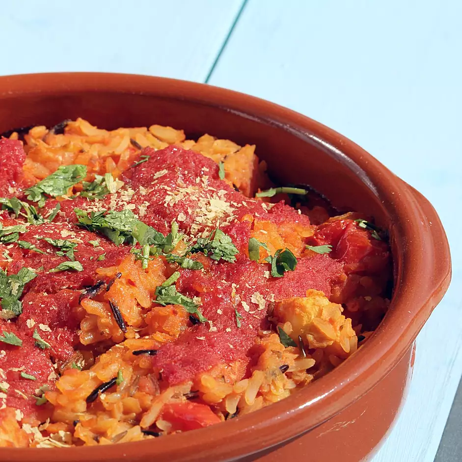

This delicious vegan recipe can be quickly thrown together from things you probably already have in the kitchen.

Ingredients
1/2 cup uncooked long grain white rice
2 1/2 cups water
1 cup red lentils
1 teaspoon vegetable oil
1 small onion, chopped
3 cloves garlic, minced
1 fresh tomato, chopped
1/3 cup chopped celery
1/3 cup chopped carrots
1/3 cup chopped zucchini
1 can tomato sauce
1 teaspoon dried basil
1 teaspoon dried oregano
1 teaspoon ground cumin
salt and pepper to taste
Directions
Place the rice and 1 cup water in a pot, and bring to a boil. Cover, reduce heat to low, and simmer 20 minutes. Place lentils in a pot with the remaining 1 1/2 cups water, and bring to a boil. Cook 15 minutes, or until tender.
Preheat oven to 175 degrees C (350 degrees F).
Heat the oil in a skillet over medium heat, and stir in the onion and garlic. Mix in tomato, celery, carrots, zucchini, and 1/2 the tomato sauce. Season with 1/2 the basil, 1/2 the oregano, 1/2 the cumin, salt, and pepper. Cook until vegetables are tender.
In a casserole dish, mix the rice, lentils, and vegetables. Top with remaining tomato sauce, and sprinkle with remaining basil, oregano, and cumin.
Bake 30 minutes in the preheated oven, until bubbly.
Nutrition Facts
Per Serving: 187 calories; protein 9.7g; carbohydrates 35.1g; fat 1.5g; sodium 211.5mg.